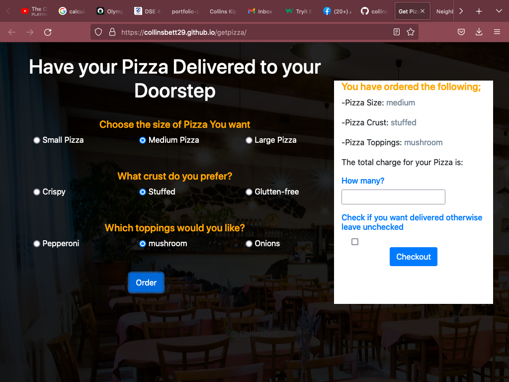
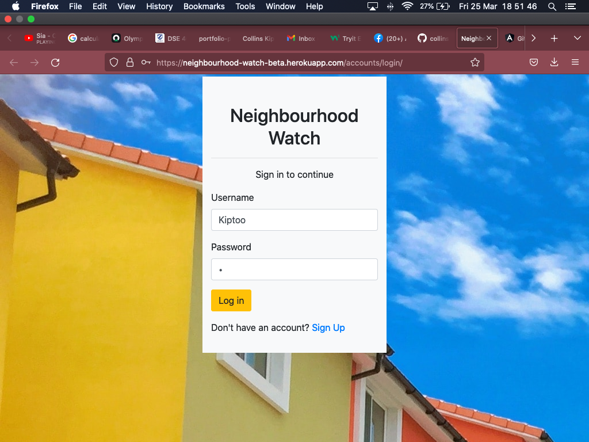
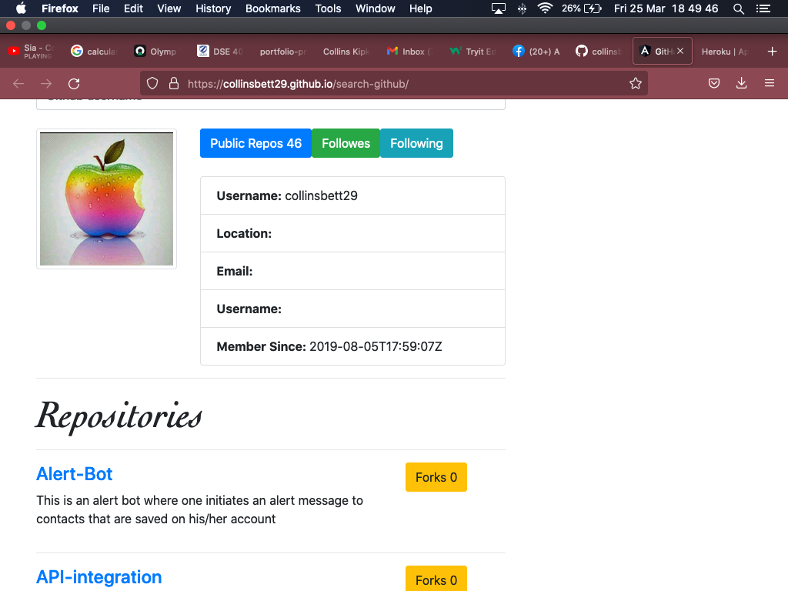

Featured projects



Testiomonials
Patrick Cheruiyot
Snr. Developer
Titus Njiru
Lecturer
Faith Oduor
Jnr. Developer
I am a junior Fullstack Developer adept in all stages of web & mobile development. Knowledgeable in user interfaces, back-end development, testing, and debugging processes. Equally equipped with a diverse and promising skill-set. Proficient in an assortment of technologies, including Python (Django & Flask) ,PHP(Laravel) , JavaScript and Angular JavaScript, React Native, HTML 5 & CSS.
Snr. Developer
Lecturer
Jnr. Developer